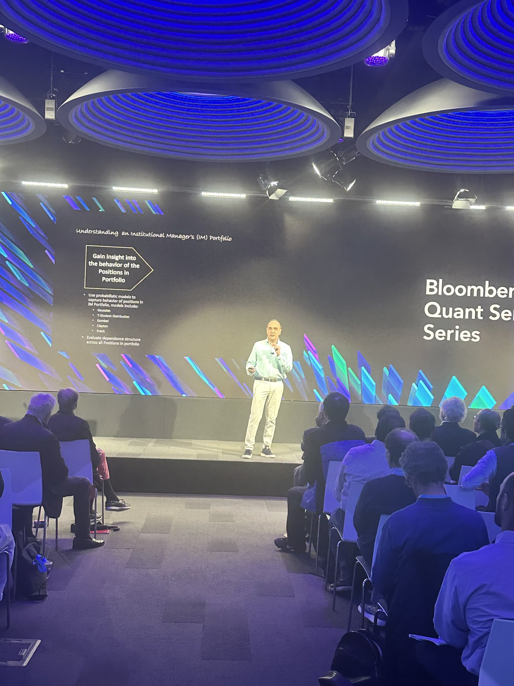
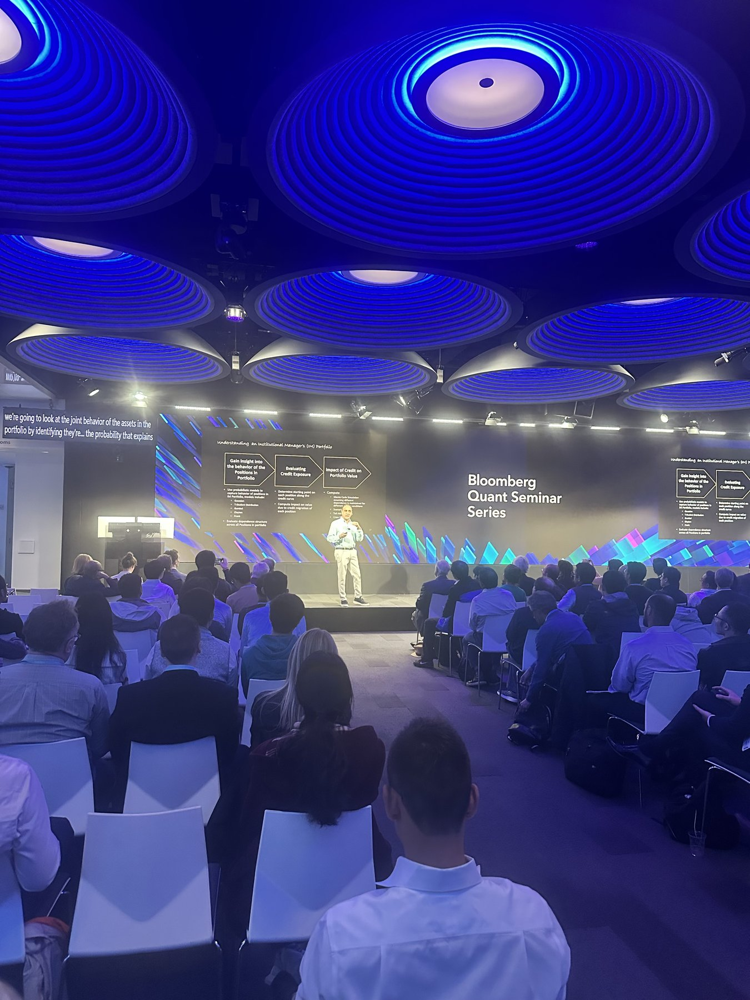
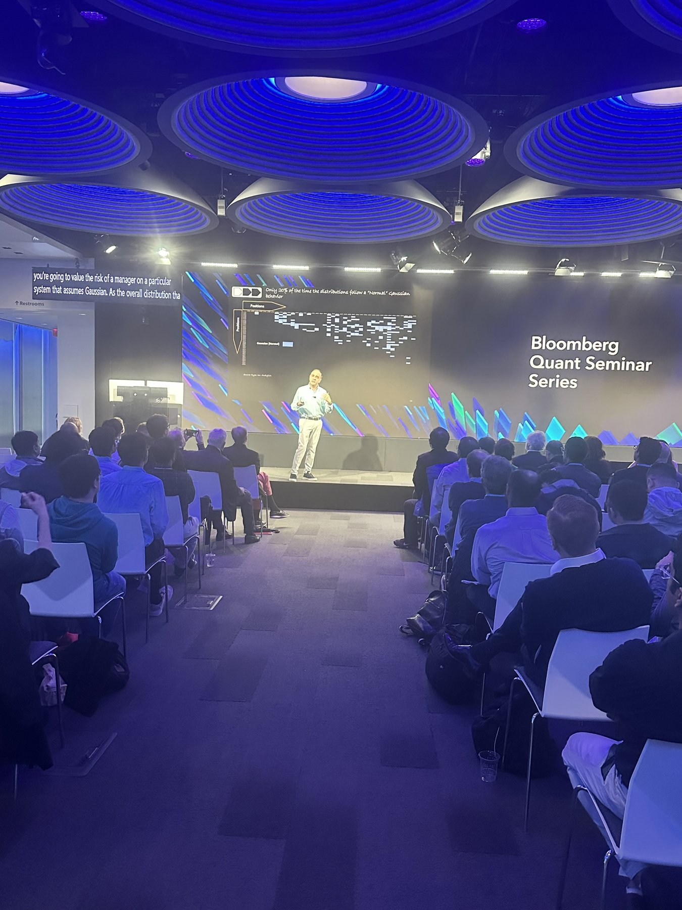
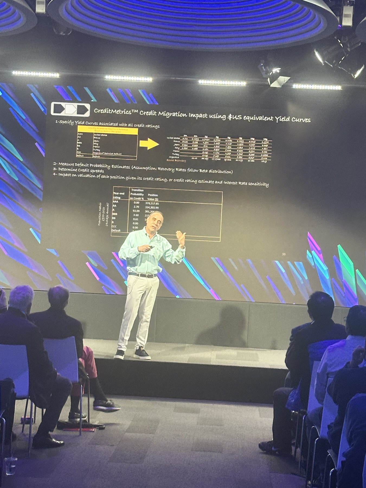
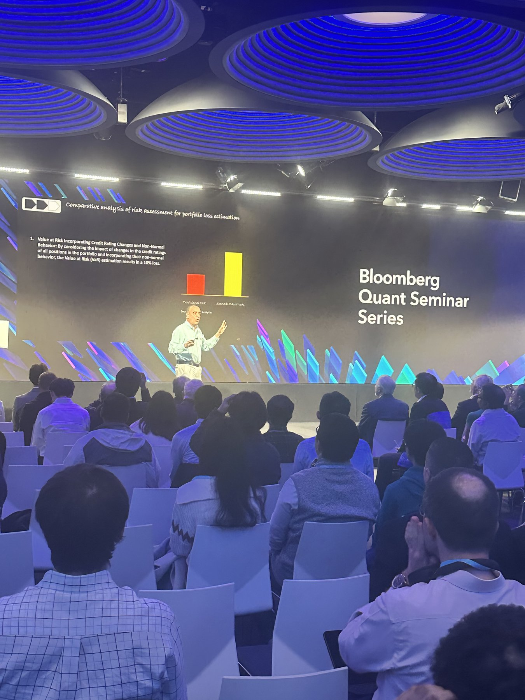
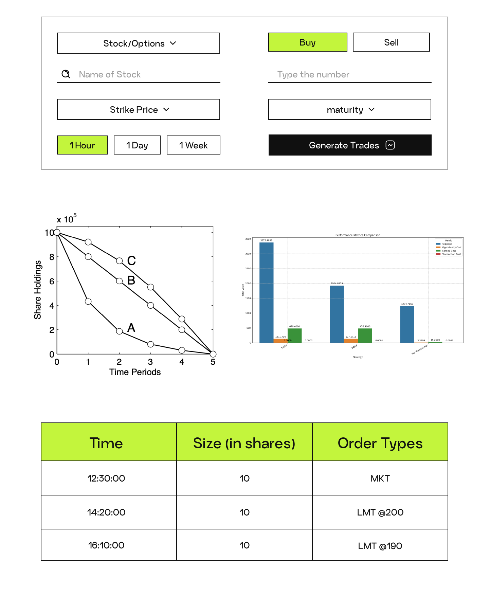
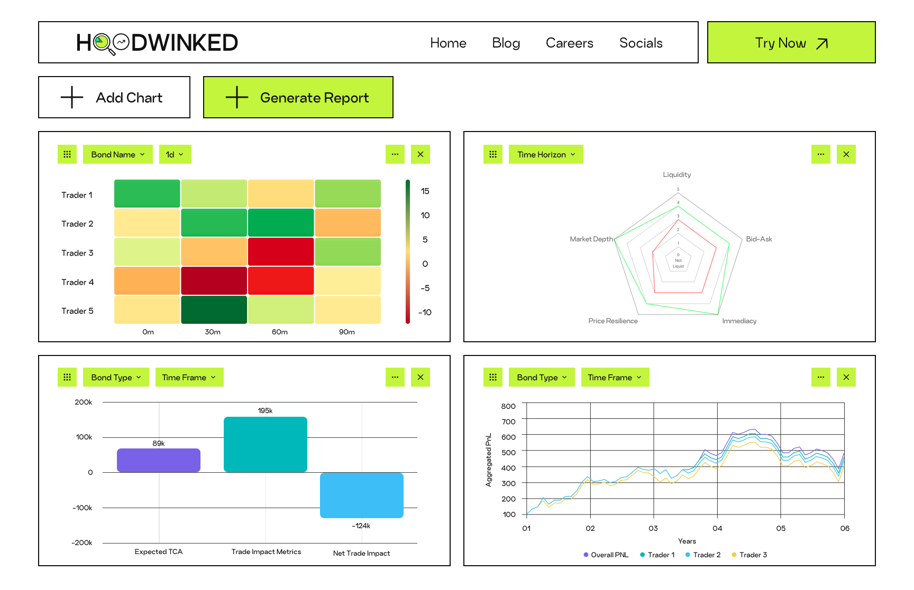

I like working on software that makes complex work clearer, faster, and easier to act on. Over the last few years, I've worked on trading, quantitative research, enterprise software, and AI products.
I was born and raised in Dubai and now split my time between Philadelphia and New York. On weekends, I'm usually hiking or at the beach swimming. I'm building Geist. It's an agent harness for financial research.
SAP
I joined SAP working on Cloud ERP reporting, where much of the data lived across spreadsheets and older BI dashboards. Updates often required manually combining information from different sources, including partner metrics around retention, churn risk, feature adoption, web engagement, and SAP Community activity. I rebuilt the reporting workflow in SAP Analytics Cloud and centralized the data across more than 60 partners and three regions. The resulting dashboards were used by Sales, Services, and GTM teams to understand partner and customer activity.
As the reporting work became more automated, I started taking on more technical projects. I worked with engineers on an internal partner-facing tool grounded in S/4HANA Cloud documentation, which was my first experience using coding agents as part of development. I used Cursor and GitHub Copilot to steer implementation and merge reviewed pull requests, and the project was later incorporated into the larger effort that became Joule for Consultants.
That work gave me broader exposure across SAP and led to customer discovery and prototyping with the FDE and product teams. For a multinational pharmaceutical, I spent several sessions understanding a legacy Accounts Payable workflow running on SAP VIM, including where the data came from and where manual intervention was required. I then built a prototype for automating parts of the process through three-way matching and discrepancy handling, which was handed off to the engineering team for further development.
Alongside this work, I mentored two interns who joined after me and handled the transition of the reporting work to them, and I also delivered internal enablement sessions on Joule.
Ryse, Inc.
I worked on quantitative risk research for a $1.6B East African sovereign bond portfolio, starting with an Excel model for how assets move together during stressed markets. After testing it on pairs of assets, I expanded the model to the S&P 500. When the initial results were not useful enough, I rebuilt the implementation in Python so it could run across arbitrary pairs and large historical datasets.
I used the resulting system to study nonlinear dependence and tail risk across the S&P 500 during several market regimes, including the dot-com crash, the 2008 financial crisis, COVID, and the 2025 tariff period. I implemented the dependence models and built the Monte Carlo simulation infrastructure in Python, then deployed the services on Azure. The research was later presented at the Bloomberg Quant Seminar Series.





"Risk modeling of nonlinear assets" · Mario Pardo, Ryse Inc. · Bloomberg Quant Seminar Series, [May 2025]
I also built a voice-activated trading interface and adapted it for the platform, handing the implementation to the engineering team for integration.
Blockhouse
I joined Blockhouse as one of the first interns and worked across product, engineering, and growth as the company built trading and execution tools around transaction cost analytics. I worked with the ML and engineering teams to understand what the product needed and help turn those requirements into features and interfaces.
I also conducted my own discovery with options traders, practitioners, and professors, asking how they approached trading and execution and where existing tools fell short. I used those conversations to identify opportunities and build product concepts and mockups, including an options activity interface and a tool for helping traders think about execution.

Execution interface

Charts
Later, I took over the marketing effort for the trading analytics platform, wrote content, and changed the team's approach to distribution by introducing formats that felt more native to trading communities. The strategy helped the platform reach more than 20M impressions.